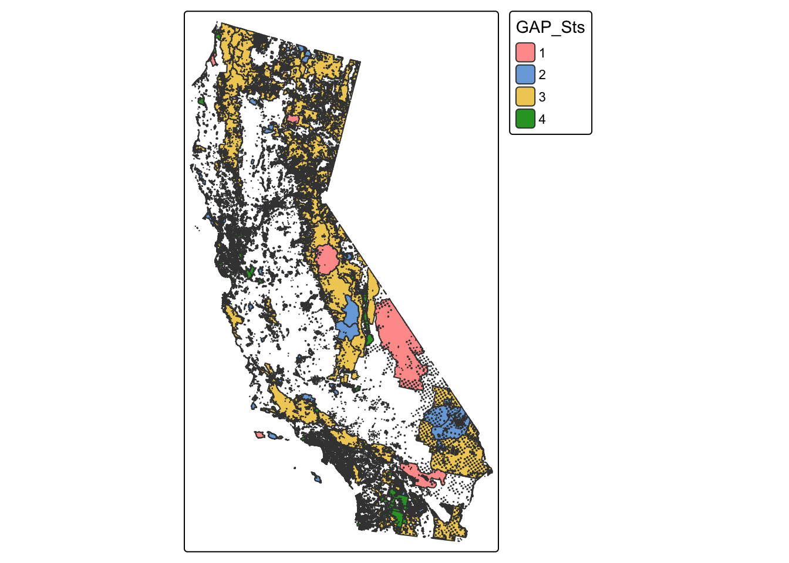
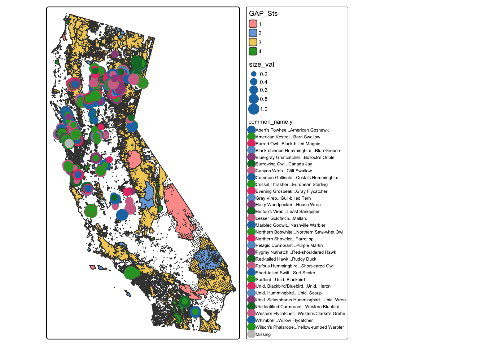

pacman::p_load('tidyverse',
'sf',
'here',
'janitor',
'tmap',
'kableExtra',
'patchwork',
'ggthemes',
'colorRamps',
'stars',
'terra')exploratory_flash_talk
Going to load neccesary packages
read gdb
gap <- st_read(here::here('data','PADUS4_1_State_CA_GDB_KMZ', 'PADUS4_1_StateCA.gdb'))Multiple layers are present in data source /Users/petervitale/Desktop/MEDS/cp-brdwatch-data-exploration/data/PADUS4_1_State_CA_GDB_KMZ/PADUS4_1_StateCA.gdb, reading layer `PADUS4_1Fee_State_CA'.
Use `st_layers' to list all layer names and their type in a data source.
Set the `layer' argument in `st_read' to read a particular layer.Warning in CPL_read_ogr(dsn, layer, query, as.character(options), quiet, :
automatically selected the first layer in a data source containing more than
one.Reading layer `PADUS4_1Fee_State_CA' from data source
`/Users/petervitale/Desktop/MEDS/cp-brdwatch-data-exploration/data/PADUS4_1_State_CA_GDB_KMZ/PADUS4_1_StateCA.gdb'
using driver `OpenFileGDB'Warning in CPL_read_ogr(dsn, layer, query, as.character(options), quiet, : GDAL
Message 1: organizePolygons() received a polygon with more than 100 parts. The
processing may be really slow. You can skip the processing by setting
METHOD=SKIP, or only make it analyze counter-clock wise parts by setting
METHOD=ONLY_CCW if you can assume that the outline of holes is counter-clock
wise definedSimple feature collection with 19019 features and 41 fields
Geometry type: GEOMETRY
Dimension: XY
Bounding box: xmin: -2356127 ymin: 1242361 xmax: -1646723 ymax: 2452203
Projected CRS: USA_Contiguous_Albers_Equal_Area_Conic_USGS_versionLets map out the base gap statuses
tm_shape(gap)+
tm_polygons(fill = "GAP_Sts")
Now lets import the point counts and merge them to attempt to plot them
point_count <- read_csv(here::here('data', 'point_count.csv'))New names:
Rows: 683669 Columns: 39
── Column specification
──────────────────────────────────────────────────────── Delimiter: "," chr
(19): GlobalUniqueIdentifier, ProjectCode, ProjectName, LocalityID, Stu... dbl
(16): ...1, SamplingUnitId, ParentSamplingUnitId, DecimalLatitude, Deci... lgl
(2): ProportionAreaSurveyed, InFocalHabitat date (1): ObservationDate time (1):
Time
ℹ Use `spec()` to retrieve the full column specification for this data. ℹ
Specify the column types or set `show_col_types = FALSE` to quiet this message.
• `` -> `...1`Now we are going to select the top 10 populous birds, and then filter to just those species
top_10_species <- point_count %>%
clean_names() %>%
group_by(common_name) %>%
summarise(total_count = sum(observation_count, na.rm = TRUE)) %>%
arrange(desc(total_count)) %>%
slice_head(n = 10) %>%
select(common_name) %>%
pull()now we select the top 10 species out of the point counts to plot
top_10_point_count <- point_count %>%
clean_names() %>%
filter(common_name == top_10_species) %>%
select(common_name, observation_count, decimal_latitude, decimal_longitude, study_area)Warning: There was 1 warning in `filter()`.
ℹ In argument: `common_name == top_10_species`.
Caused by warning in `common_name == top_10_species`:
! longer object length is not a multiple of shorter object lengthNow I want to do some sort of sorting by size per locale
top_10_species_size <- point_count %>%
clean_names() %>%
group_by(common_name, study_area) %>%
summarise(total_count = sum(observation_count, na.rm = TRUE)) %>%
arrange(desc(total_count)) %>%
slice_head(n = 10) %>%
mutate(
size_val = scales::rescale(x = total_count,
to = c(0.3, 1))
) %>%
select(common_name, study_area, size_val)`summarise()` has grouped output by 'common_name'. You can override using the
`.groups` argument.Now I merge the two and it into a geodataframe
point_count_gdf <- left_join(top_10_point_count, top_10_species_size,
by = 'study_area') %>%
st_as_sf( coords = c("decimal_longitude", "decimal_latitude"), crs = "EPSG:4269") Warning in left_join(top_10_point_count, top_10_species_size, by = "study_area"): Detected an unexpected many-to-many relationship between `x` and `y`.
ℹ Row 1 of `x` matches multiple rows in `y`.
ℹ Row 1007 of `y` matches multiple rows in `x`.
ℹ If a many-to-many relationship is expected, set `relationship =
"many-to-many"` to silence this warning.tm_shape(gap)+
tm_polygons(fill = "GAP_Sts")+
tm_shape(point_count_gdf)+
tm_dots(fill = 'common_name.x',
size = 'size_val',
fill_alpha = .3)